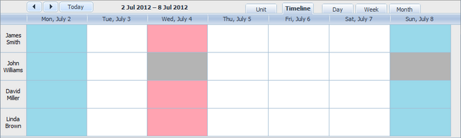

The library provides the ext/dhtmlxscheduler_limit.js extension that allows you to block and mark (highlight) certain dates or date ranges.
To start using the extension, include the ext/dhtmlxscheduler_limit.js file on the page.
Note, if you use the Timeline View, the 'limit' extension file should go before the 'timeline' one:
<script src="codebase/ext/dhtmlxscheduler_limit.js"></script> <script src='codebase/ext/dhtmlxscheduler_timeline.js'></script>
The extension gives at your disposal the next configuration options:
Related sample: Current time marking
If the scheduler detects an attempt to create/modify an event with a non-allowed date, the onLimitViolation event will be generated.
There are a couple of methods you can specify a limit in the scheduler with:
Related sample: Blocking dates
There are 2 methods that can be used to mark the specified date(s):
Related sample: Handling the pointer highlighting
There are a couple of methods that can be used to remove the currently marked/blocked time spans:
Related sample: Handling the pointer highlighting
When you call the 'blocking' methods several times and block different ranges, blocking will follow this priority (from highest to lowest):
For example:
scheduler.addMarkedTimespan({ // blocks 4th July, 2012 (this is Wednesday).
days: new Date(2019, 7, 4),
zones: "fullday",
type: "dhx_time_block",
css: "red_section" // the name of applied CSS class
});
scheduler.addMarkedTimespan({ // blocks each Sunday, Monday, Wednesday
days: [0, 1, 3],
zones: "fullday",
type: "dhx_time_block",
css: "blue_section" // the name of applied CSS class
});
//blocks each Sunday and Wednesday just for an item with id=2
scheduler.addMarkedTimespan({
days: [0,3],
zones: "fullday",
type: "dhx_time_block",
css: "gray_section", // the name of applied CSS class
sections: { timeline: 2}
});
As a result of calling these methods you will get the following:

Back to top